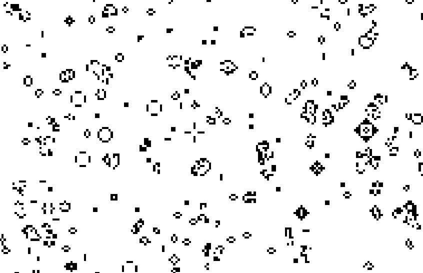

Conway's Game of Life - Mobile App
This is an implementation of Conway's Game of Life cellular automaton simulation built using Corona SDK/Solar2D game engine. The application features both random and user-input grid generation modes, with adjustable grid sizes and simulation speeds. The game follows Conway's classic rules where cells live or die based on their neighbors, creating fascinating patterns and behaviors
2
Technology Used
3
Key Features
Tech Used

Key Features
- Handles multiple grid modes allowing users to choose a random starting grid or creating their own custom starting grid
- Includes simulation controls allowing users to start, pause, and reset the game as well as adjust the simulation speed
- Includes state management allowing users to save and load game states